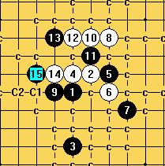

妖刀系列--大明星刀
#1 妖刀系列--大明星刀 作者：邓飞 发表时间：2009-5-24 22:23:10
大明星刀初期认为白胜的刀局,后期研究属黑白可战,
五手两打规则下为平衡局,类式疏、瑞

(上图:一打不能完全必胜,黑优，二打黑白可战，其他5败)

(上图:只有1个白6可下,其余的6都为必败)

(上图:最强的黑7，但也不能完全做到必胜)
(上图:次强的7，白8唯一，其它8都败)

(上图:二打，比较平衡局，几个强6黑白可战



(上图:曾经认为这个白4最强,随着研究的深入,得出结论为一打必胜,二打黑白可战)

(上图:白10防左边败，防右边黑白可战)

(上图:黑7必败)


(上图:黑5必胜)

(上图:最强的白4，一打黑优，五手两打规则下白棋稍优)


(上图:到这里白优)
［ 失落刀 于 2009-5-24 22:32:03 时奖励此帖[金币加 20 威望加1］
［ 炫飞冰弦 于 2009-5-24 22:33:35 时花20金币送鲜花一朵］
［ 冰雪笑醉 于 2011-7-27 16:33:25 时花20金币送鲜花一朵］
#2 Re:妖刀系列--大明星刀 作者：岳麓小棋后 发表时间：2009-5-24 22:28:50
LS辛苦了，谢谢#3 Re:妖刀系列--大明星刀 作者：茗弈如梦 发表时间：2009-5-24 22:48:10
学习了,, ,,真用心,
,,真用心,
#4 Re:妖刀系列--大明星刀 作者：为你写诗 发表时间：2009-12-12 17:31:26
引用：
原文由 邓飞 发表于 2009-5-24 22:23:10 :大明星刀初期认为白胜的刀局,后期研究属黑白可战,
五手两打规则下为平衡局,类式疏、瑞
(上图:一打不能完全必胜,黑优，二打黑白可战，其他5败)
(上图:只有1个白6可下,其余的6都为必败)
(上图:最强的黑7，但也不能完全做到必胜)
(上图:次强的7，白8唯一，其它8都败)
(上图:二打，比较平衡局，几个强6黑白可战
(上图:曾经认为这个白4最强,随着研究的深入,得出结论为一打必胜,二打黑白可战)
(上图:白10防左边败，防右边黑白可战)
(上图:黑7必败)
(上图:黑5必胜)
(上图:最强的白4，一打黑优，五手两打规则下白棋稍优)
(上图:到这里白优)
［ 失落刀 于 2009-5-24 22:32:03 时奖励此帖[金币加 20 威望加1］
［ 炫飞冰弦 于 2009-5-24 22:33:35 时花20金币送鲜花一朵］
#5 Re:妖刀系列--大明星刀 作者：猪无戒 发表时间：2011-7-27 16:32:55
这牙真好啊！
#6 Re:妖刀系列--大明星刀 作者：逆刃 发表时间：2011-10-16 13:22:59
这个8是败吧。
#7 Re:妖刀系列--大明星刀 作者：秋风雾语 发表时间：2011-10-16 20:37:37
弱弱问句：楼主，在你现在的终结扫防设置下，是不是有局面会漏掉一些防点呢？